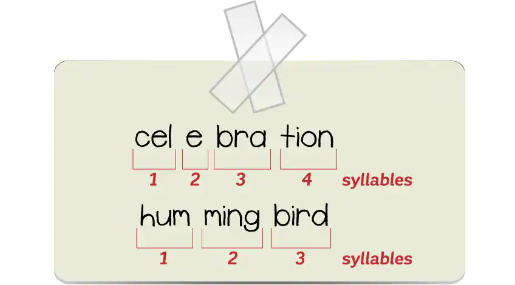

Before we begin to learn a about the form and structure of HAIKU, it is important to learn about syllables and counting syllables. Learning about syllables is part of learning how to decode and spell words and ultimately in our case to write HAIKU.
Syllable is a unit of pronunciation having one vowel sound, with or without surrounding consonants, forming the whole or a part of a word; for example, there are two syllables in water and three in inferno. The image below shows various examples of syllable counting in various words:
Try to pick any work - for example your name, the name of your city and count the number of syllables. Can you try to count the number of syllables in longer words? Such as 'CELEBRATION' or 'HUMMINGBIRD'? The image below shows the syllable counting for these words. 
Now that we know how to count syllables, let us move on to understanding the form or a HAIKU.
There is a common structure that most haiku poems follow. It is the 5-7-5 structure, where: The entire poem consists of just three lines, with 17 syllables in total
Here is an example of a HAIKU - you can observe how it follows the structure:
Hint
Feedback
Now, let's move on to the third learning objective
<< Go BACK to: Learning objective # 1 || Go to the NEXT page: Learning objective # 2 >>